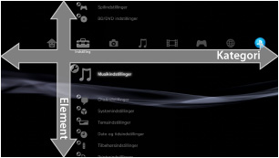
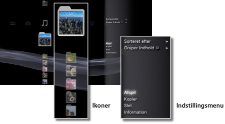
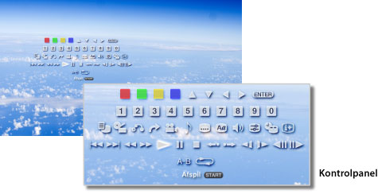

Om XMB™ > Om XMB™ (XrossMediaBar)
Om XMB™ (XrossMediaBar)
Brug af XMB™
PS3™-systemet indeholder en brugergrænseflade ved navn XMB™ (XrossMediaBar). Den vandrette række viser systemfunktioner i kategorier, og den lodrette kolonne viser elementer, der kan udføres under hver kategori.

| Retningsknapper | Vælg en kategori eller et element. |
|---|---|
 -knappen -knappen |
Bekræft det valgte element. |
 -knappen -knappen |
Annuller en handling. |
 -knappen -knappen |
Vis indstillingsmenuen/kontrolpanel. |
| PS-knappen | Vis XMB™. |
Afspilning af indhold
Åbn XMB™, vælg indholdet på disken eller lagermediet, og tryk på -tasten. Stop afspilningen ved at trykke på -knappen.
Tip
Visse modeller af PS3™-systemet kræver en bestemt USB-adapter (medfølger ikke) ved brug af lagermedier.
Informationspanel
Ved hjælp af informationspanelet øverst til højre på skærmen kan du se, hvor mange venner der er online, om der er nye beskeder og se de seneste oplysninger, som findes under [What's New].

(1) |
Avatar * |
|---|---|
(2) |
Antal venner, som er online * |
(3) |
Oplysninger om ny tekstchat * |
(4) |
Oplysninger om nye beskeder |
(5) |
Dato og klokkeslæt |
(6) |
Optaget-ikon |
(7) |
Oplysninger, som er tilgængelige under [What's New]* |
* Vises kun, hvis du er logget på PSNSM.
Brug af indstillingsmenuen
Vælg et ikon i XMB™, og tryk derefter på -tasten for at få vist indstillingsmenuen. Indstillingsmenuen kan vises eller skjules ved at trykke på -knappen.

Emner i indstillingsmenuen
Emnerne i indstillingsmenuen varierer, afhængigt af kategorien.
| Afspil / Start / Gennemse | Afspil indhold. |
|---|---|
| Fjern disk | Vælg denne indstilling for at skubbe disken ud. |
| Slet | Slet indhold. |
| Kopier | Vælg denne indstilling for at kopiere indhold til systemlageret eller lagringsmediet.*1 |
| Information | Få vist oplysninger om indholdet. Nogle oplysninger f.eks. navnet kan ændres. |
| Tilføj til spilleliste | Vælg denne indstilling for at føje indhold til spillelisten. |
| Vis alle | Vælg denne indstilling for at få vist alle mapper, der er gemt på lagringsmediet eller på en USB-lagringsenhed.*1 |
| Sorteret efter | Sorter indholdsemner efter navn, dato osv. |
| Gruper Indhold | Vælg denne indstilling for at ændre grupperingsmetoden til at gruppere efter album, format eller andre indstillinger.*2 |
| Slet Flere | Vælg flere indholdsemner, og slet dem alle sammen på én gang. |
| Kopier Flere | Vælg flere indholdsemner, og kopier dem alle sammen på én gang. |
| *1 |
Visse modeller af PS3™-systemet kræver en bestemt USB-adapter (medfølger ikke) ved brug af lagermedier. |
|---|---|
| *2 |
Indhold, der ikke indeholder de oplysninger, som er nødvendige for at udføre gruppering, grupperes i mappen [Ukendt]. Ikke alt indhold grupperes. |
Brug af kontrolpanelet
Tryk på -tasten under indholdsafspilning for at få vist kontrolpanelet. Kontrolpanelet kan vises og skjules ved at trykke på -knappen. Emnerne i kontrolpanelet varierer, afhængigt af det indhold, der afspilles.

Brug af flere funktioner samtidig
Brugerne kan benytte flere funktioner på en gang. Det er f.eks. muligt at få vist billeder under  (Foto) eller få adgang til internettet under
(Foto) eller få adgang til internettet under  (Netværk), mens der spilles musik under
(Netværk), mens der spilles musik under  (Musik).
(Musik).
Eksempel: Visning af billeder under (Foto), mens der spilles musik under (Musik)
1. |
Spil musik under |
|---|---|
2. |
Tryk på PS-knappen. |
3. |
Vælg de billeder, der skal vises under |
Tips
- Du kan ikke afspille -indhold (Musik) sammen med andre funktioner under afspilning af Super Audio CD, eller når
 (Indstillinger) >
(Indstillinger) >  (Musikindstillinger) > [Outputfrekvens] er indstillet til [44,1/88,2/176,4 kHz].
(Musikindstillinger) > [Outputfrekvens] er indstillet til [44,1/88,2/176,4 kHz]. - Afhængigt af den type indhold, der afspilles, er nogle funktioner, der sædvanligvis kan afspilles på samme tid, muligvis ikke tilgængelige.
Vigtigt
Ikke alle PS3™-systemer kan afspille Super Audio CD'er. Yderligere oplysninger findes under [Understøttede disktyper].